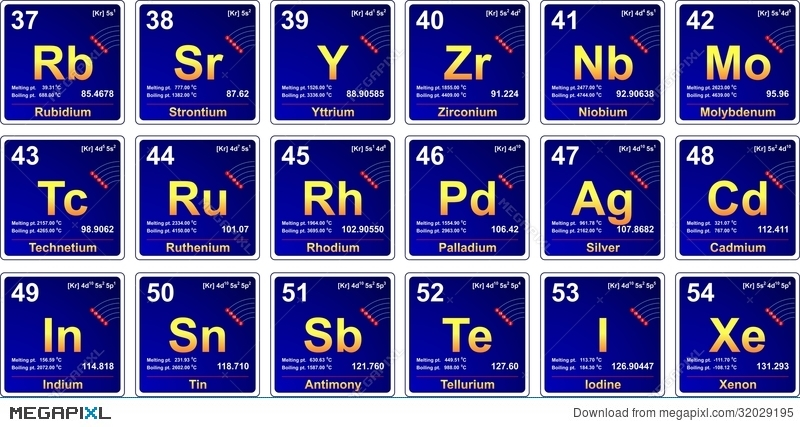

PERIOD 5

The periodic table is laid out in rows to illustrate recurring (periodic) trends in the chemical behaviour
of the elements as their atomic number increases: a new row is begun when chemical behaviour begins to repeat, meaning that elements
with similar behaviour fall into the same vertical columns. The fifth period contains 18 elements, beginning with rubidium and ending with xenon.
As a rule, period 5 elements fill their 5s shells first, then their 4d, and 5p shells, in that order; however, there are exceptions, such as rhodium,